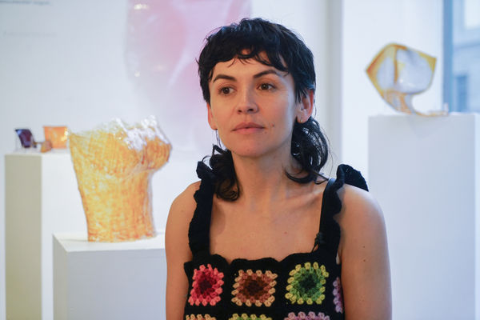

All Land is Holy
Olivia Cueva in Residence
December 20th - January 21st, 2024
I spent this month in residency at Dream Farm Commons researching and working with plants that have significance and symbolism in Palestine and, as I discovered, to my own work and cultural identity. From the heart of Berkeley/Oakland, California, situated on the Huichin Territory of the Chochenyo Muwekma Ohlone people, I foraged seasonal plants, establishing a connection with distant landscapes. From this my exhibition, All Land is Holy was born.
All Land is Holy is an art exhibition that unfolds against the backdrop of the ongoing genocidal catastrophe in Gaza. My exploration delves into the realms of land rights, indigeneity, and the call for 'land back' that echoes through the current movement.
All Land is Holy extends my ongoing exploration of bio-plastic fashion and textiles, where the alchemy of gelatin and natural dyes converge to breathe life into unique and vibrant wearables, wearables that can decompose safely back into to the earth once they are no longer wanted or needed anymore.
Each exhibited piece is destined for a poetic return to the earth, embracing the inevitable journey of decomposition. The raw materials, sourced from their respective landscapes, will be reverently returned to their origins, closing the loop of creation and dissolution.
This exhibition beckons you to contemplate the interconnectedness of place, land, and body, and how we become better stewards of the earth while on occupied stolen land.
About the Artist:
Olivia Cueva is an artist and community educator from Berkeley, CA. She makes work that weaves fashion, technology, storytelling, and sustainability. She is currently designing naturally dyed bio plastic fashion and footwear that can decompose safely back into the earth.